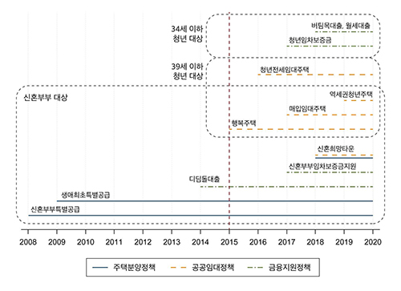
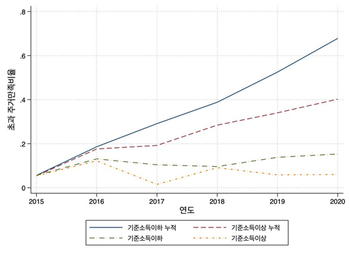
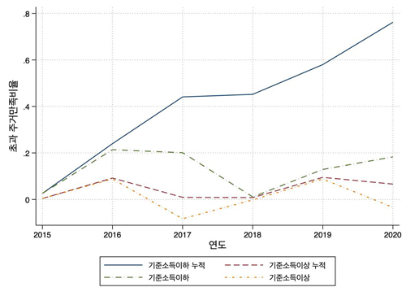
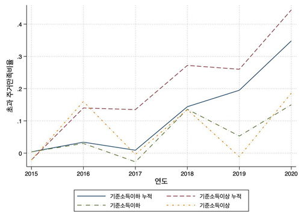
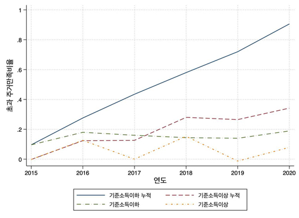
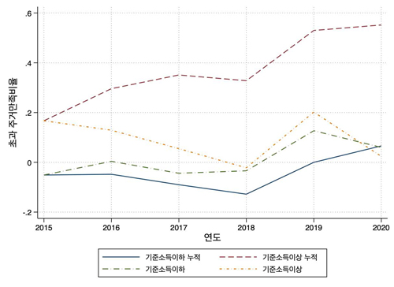

Analysis of Changes in Housing Satisfaction of Young Households Following the Implementation of Housing Policies for Young People






Prior to the mid-2010s, the housing welfare policies of the central
government and local governments mainly targeted the elderly and family units,
and young households have been excluded from the policy. However, as the
youth housing problem was recognized as a social problem, a youth housing
policy targeting the youth class emerged, starting with the supply of rental
housing in 2015.